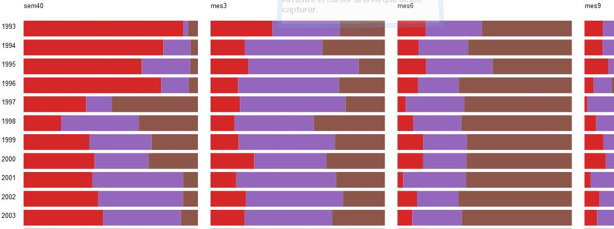
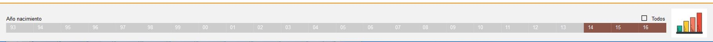
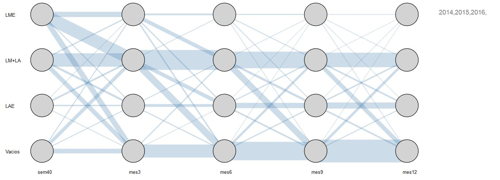

Gráfica de comparación de patrones de alimentación
El objetivo de esta representación es observar los cambios en el patrón nutricional de los niños a través del tiempo. Se observa por cada año y por cada punto de corte (semana 40, mes 3, mes6, mes 9, mes 12), gráficos de barras proporcionales para poder comparar el tipo de alimentación que más relevancia ha tenido en cada año y en cada punto de corte.

A través del siguiente componente pueden generarse nuevas gráficas que permiten hacer comparaciones en tendencias de alimentación entre diferentes muestras:

Cada cuadro corresponde a un año de nacimiento que puede ser seleccionado o deseleccionado, el botón  permite una selección o deselección rápida de todos los botones.
permite una selección o deselección rápida de todos los botones.
La gráfica resultado se observan las tendencias en alimentación que tuvieron los niños nacidos en los años seleccionados en la semana 40, mes 3, mes 6, mes 9 y mes 12

Las gráficas que se generen se mostraran una debajo de otra con el fin de permitir la comparación entre ellas.